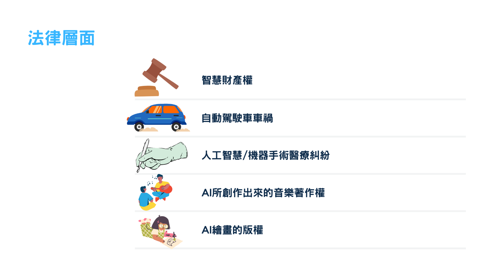

定義與概述
人工智慧有那些挑戰
諸多因素促成近年來人工智慧技術突飛猛進。除了出現了許多令人振奮的新技術之外， 這也讓社會突然之間需要面對很多新的挑戰。
聽了很多古典音樂之後， AI 所創作出來的交響樂，著作權屬於誰？ 反過來說， 看了很多二次元角色之後，AI 所畫出來的新造型二次元角色， 有沒有侵權？
成本低廉的逼真的假影片的普及， 是否也意謂著 「有影片未必有真相」 年代的來臨？假色情影片的受害者， 可以尋求什麼樣的法律保護？
有能力從相片推測性傾向的 AI、 有能力從從臉書貼文推測政治傾向的 AI，對你我的隱私有何威脅？
在禁止多元文化的國家，會如何被濫用？ 被政府濫用， 而又判斷錯誤時，會發生什麼事？
自動駕駛及飛行技術搭配圖片（例如植物或人臉）辨識技術，可以幫助農夫精準灑農藥，但也可以幫助恐怖份子鎖定特定類型對象進行大規模致命攻擊。
著作權或生命權將會是AI的一大挑戰。

Copyright © 16+26 All Rights Reserved.